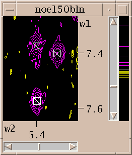

Sparky helps you assign and integrate peaks in NMR spectra. Spectra processed with NMRPipe, Felix, Varian VNMR, or Bruker software can be used. The output is text lists of assigned peaks, chemical shifts, volumes, linewidths, ....
Assignment w1 w2 Volume lw1 (hz) lw2 (hz) G16H3'-H8 4.905 8.010 7.15e+06 ga 28.6 20.0 G16H4'-H8 4.439 8.013 5.42e+06 ga 35.3 16.9 T17H6-G16H8 7.205 8.004 1.68e+06 T17H7-G16H8 1.459 8.008 2.09e+07 ga 27.5 24.1 T17H2"-H1' 2.509 5.840 4.68e+07 ga 41.2 17.6
Also output formatted for structure determination with DYANA, or distance restraint calculation with MARDIGRAS can be generated. Finding peaks and making assignments is done manually through a graphical user interface. Sparky does not do spectral processing or distance geometry, molecular dynamics, or make toast.
Under Unix the command to run Sparky is "sparky". The usual installation location is /usr/local/sparky/bin. If this directory is in your search path you can start Sparky from any directory by typing "sparky". Under Microsoft Windows (95, 98 or NT) you start the program by double clicking sparky.bat in c:\Program Files\sparky\bin. Sparky has many tools each having their own dialog for setting parameters. You can have many of these on the screen simultaneously in addition to lots of spectrum contour plots. To hide this mass of windows iconify the main Sparky window and all the rest will iconify.
Sparky can directly read Felix matrix files, Bruker processed data, and a UC San Francisco format. Data processed with NMRPipe, Varian's VNMR, or Bruker software can be converted to the UCSF format with programs pipe2ucsf, vnmr2ucsf, and bruk2ucsf that come with Sparky. Felix matrix data must have correct transmitter frequencies, spectral widths, reference shifts, .... Set these with the Felix rmx command. Once you get frequency domain spectral data in Felix, Bruker or UCSF format you can open it using "open" under the Sparky file menu. A new window will appear showing a contour plot.
The first thing you'll want to do is adjust the contour levels. Select "contour scale" from the View menu. This adds a scale at the right edge of the contour plot. The positive and negative levels are shown in different colors. The white line in the middle divides the negative levels shown in the bottom half of the scale from the positive levels shown in the top half. These two sets of levels can be adjusted separately. When you first open a spectrum one positive level and one negative level are shown. You can raise the positive level by pressing the mouse button a little below it and moving the mouse up. Dragging the mouse down will create additional lower contour levels. In general there are 3 ways to use the mouse to adjust the levels. By pressing the left mouse button a little below the lowest level in the scale and dragging up or down you remove or add low contour levels. Likewise you can press above the highest level and drag up or down to add or take away high levels. To leave the high and low level fixed but change the number of levels in between press the mouse button in between the highest and lowest levels and drag up for more levels or down for fewer levels. The negative contour levels displayed in the lower half of the contour scale are adjusted in the same way. The colors of the positive and negative levels can be selected with the contour dialog. Some of the color choices such as red-blue, red-yellow and green-blue color the contour lines in a range of colors to aid in discerning height.

To show different regions of the spectrum move the scrollbars, resize the window, and use "zoom in", "zoom out", and "zoom previous" from the View/Zoom menu. Note that the menu entries for zooming have 2-key accelerators listed next to them. The accelerator for zoom in is "zi". Typing zi in the spectrum window makes it zoom in. Another way to zoom in is to select the zoom pointer mode. There's a window of vertical buttons "select", "center", .... This window determines the pointer mode. Select the zoom pointer mode. Then drag a box in a spectrum window. The view zooms to show that region. By "drag a box" I mean press the left mouse button at one corner of the desired region, hold it down and move the pointer, and release the button.
You can show more than one view of a spectrum. Select "duplicate" under the view menu or type the accelerator "vd" in the window you want to duplicate. Another view window will be created. You can adjust its contour levels and the region shown to be different from the original view. Each view has a name shown at the top of its window. The name is derived from the name of the spectrum with a number appended.
You can show as many views of as many spectra as you want. To open a view of a new spectrum use Open under the File menu. The views of any previously opened spectra remain displayed. To delete a window use the Delete View command under the View menu (accelerator vD) or click on the close button on the window frame.
Now you've zoomed in to an appropriate magnification and set the contour levels to eliminate most of the noise. Choose the "find/add peak" pointer mode. If you click the left mouse button over a peak a marker will appear. You've placed a peak marker on the spectrum and it will appear in all views of this spectrum. You can also drag a box around a region, ie. press the left button and move the mouse and then release the button. A rectangular box is drawn and Sparky will place peak markers on all the peaks in the region. How does it do this? It uses a minimum height and optionally minimum linewidth and minimum drop off filters. The minimum positive and negative heights are equal to the lowest positive and negative contour levels. You set the minimum linewidth using the peak pick dialog (accelerator "kt"). The linewidth is taken as the half height width. To avoid picking overlapped peaks you can insist that the data height drop as you move from the center peak position by a specified amount before rising again. This parameter is also set with the peak pick dialog (kt).
If you want to move a peak marker switch to the "select" pointer mode and drag and drop the peaks. If you want to delete a peak switch to select mode, click on a single peak or drag a box around a region to select peaks. Selected peaks are outlined with a square. You can delete the selected peaks by pressing the delete key. If you delete some peaks by mistake you can use the "edit undo" command (accelerator eu) to restore them. This will only undo the most recent peak deletion, peak integration,
Select a single peak and bring up the assignment dialog (accelerator at). Type in a group name and atom name for each axis and press Apply. Press the "Apply" button to make your changes take effect. Dialogs in Sparky have an "Ok" button and an "Apply" button. Ok means make the changes and make the dialog disappear. Apply means make the changes and leave the dialog up. Since you pressed Apply the assignment dialog is still showing so you can continue assigning peaks. Sparky is designed for assigning polymers -- proteins and nucleic acids. Assignment atom names are divided into two parts. For example, P71 CA denotes the alpha carbon of proline residue 71. The first part, the group, is meant to indicate the amino acid residue or nucleic acid base and a sequence number (eg. P71, PRO71, tyr36, a9, GUA15, G15...). If you have peaks from multiple conformations you could add an additional suffix to the group name, for example P71a, P71b. The second part specifies the atom (eg. CA, HA, HB, H, N, H2', H6, ...). The basic features in Sparky do not interpret the group or atom names, so you can use whatever names will be useful in peak lists by subsequent structure calculation programs. Some more specialized capabilities, commonly extensions to Sparky, require that you use standard one letter codes for amino or nucleic acids and standard atom names. At the beginning of the assignment process you won't know much and can use group names like g1, g2, g3, ... and later rename them.
When you make an assignment a label is displayed near the peak. With the pointer in select mode you can drag the label to a new location.
Assignments can be displayed along the edges of a view. To show these resonance panels along the edges of a view use the "show resonances" command under the view menu (accelerator vR). The group and atom names will be shown along both axes. To see the alignment of peaks with these resonance names it help to display crosshairs, a horizontal and vertical line that follow the pointer. Bring up the view settings dialog (accelerator vt), and check crosshair display and press OK.
You've picked some peaks. Now try integrating one. Select the "integrate" pointer mode, then drag a box around a peak you want to integrate. The default integration technique is to use a Gaussian fit. If it worked, the peak will be recentered to the best fit position and will have a circle drawn around it. You can examine the fit by displaying one dimensional cross-sections along the edges of the view. Bring these slice panels up using "show slices" under the view menu (accelerator vS). The profiles of the spectrum data are shown in black and the peak fitting profiles in blue. The horizontal panel shows the horizontal cross-section at the pointer position.

To see the numerical volumes and linewidths bring up a peak list (accelerator lt). Press the Options button in the peak list dialog and select volume and linewidth display and press OK. The list shows all peaks in the spectrum and can be written to a file by pressing the Save button.
Peaks can be integrated using different methods. Gaussian or Lorentzian fitting can be done. Overlapped peaks can be simultaneously fit where all selected peaks within the lowest contour line are taken as a group. Groups can also include peaks not withing a common contour line but within a specified distance of each other. You can also integrate peaks by boxing or ellipsing. You drag a rectangle or ellipse around a peak and the heights at all interior points are summed up. The integration technique is chosen using the integration dialog (accelerator it).
Peak lists (lt) are useful for inspecting volumes, linewidths, and other properties and are the primary form of output to be used by other programs in structure calculations. They are also useful for quickly locating a picked peak in a spectrum. Double clicking on a line in the peak list will recenter a spectrum view to show the selected peak. A single click of the middle mouse button has the same effect. You can also select peaks by dragging over multiple peak list lines. Hold the shift key to select additional peaks in another part of the peak list. Commands typed in the peak list window act in the same way as if they are typed to a spectrum view. So you can, for example, hit the delete key to unpick the selected peaks in the spectrum.
Sparky maintains lists of resonances. By a resonance, I mean an atom name and a frequency. The frequency of a resonance is calculated from the positions of all the assigned peaks involving the atom. All peaks are weighted equally in the average. The resonance list command rl displays a list of resonances. Clicking on a line in the resonance list dialog brings up a peak list showing the peak assignments contributing to that resonance frequency. The resonances also appear in the assignment dialog to help you make assignments, and can be shown in resonance panels along the edges of contour plots. Sometimes it is useful to maintain more than one set of resonances. If your study involves two similar molecules or spectra taken under different conditions (pH, temperature) that shift the resonance lines you probably don't want just one set of average resonance frequencies. To handle this Sparky associates a "molecule" name (eg. cyt-b5) and "condition" name (eg. ph7 25C) with each spectrum. These names are chosen by you and typed in using the spectrum dialog (accelerator st). Separate resonance frequencies are kept for each distinct molecule and condition.
To save the data you produce using Sparky use "save" under the "file" menu. This saves assignments, label positions, view window configurations, ..., jvfor a single spectrum. The file containing your processed NMR data (eg. noe150.ucsf) is never modified by Sparky. All Sparky data goes in a separate file in the ~/Sparky/Save directory (eg. named noe150.ses). Each spectrum has its own Sparky session file. When you are working with more than one spectrum, saving the data for each spectrum can be tedious. To save the data for all spectra use "project save" under the "file" menu. This creates a file in ~/Sparky/Projects which contains a list of the spectrum files you are working on. When you start Sparky at a later time you can open the project to load all your spectra. You can also load Sparky data for an individual spectrum by opening a file in ~/Sparky/Save in the same way you opened your processed NMR data. The open command recognizes both processed NMR data and Sparky data file formats.